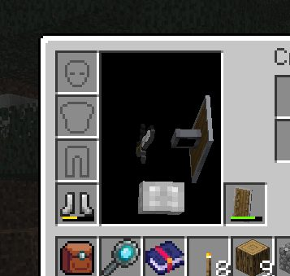
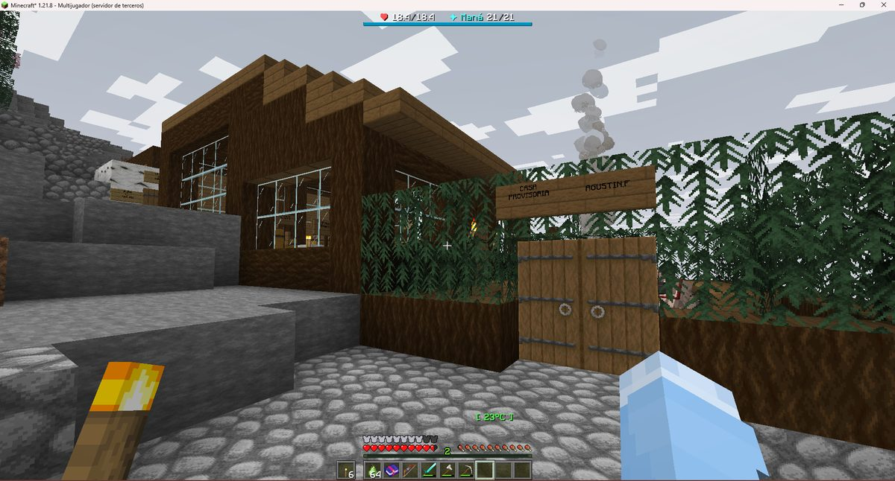
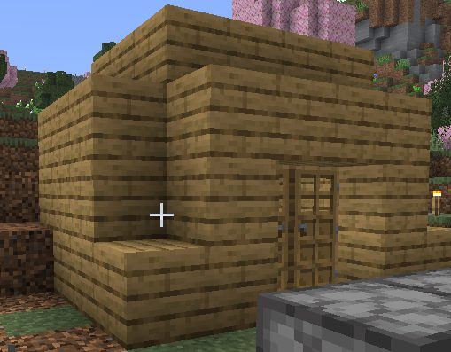
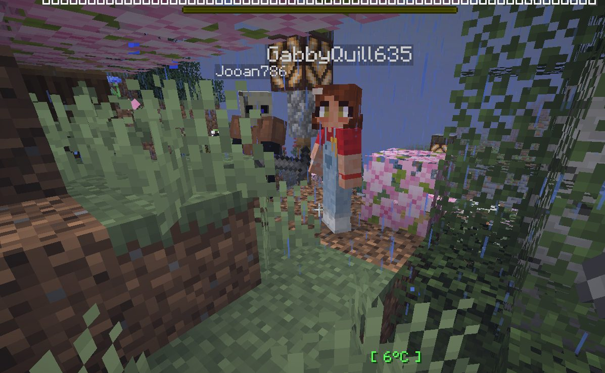

Boletín Oficial del Ayuntamiento del Reino · Se informa, no se alarma
EL HERALDO DEL REINO
Número 122 de agosto de 2026Noche del sábado 22 al domingo 23 de agosto
EL REINO ABRE SUS PUERTAS Y CINCO HORAS DESPUÉS DEJA DE VERSE A SÍ MISMO
Veinte vecinos se dan de alta en el censo en una sola noche. Hubo ciento treinta y cinco defunciones, un culto fundado ante la Torre sin permiso de reunión y una plaga de conejos. El Ayuntamiento da la jornada por un éxito rotundo.
Redactado por la Oficina de Prensa del Ayuntamiento
PORTADA
Se abre el portón. Un minuto antes ya había un muerto
El Reino abrió a las 23:20 de la noche del sábado. Un minuto antes, a las 23:19,
el Ministro Pan se cayó del andamio mientras colgaba el cartel de bienvenida y se
mató.
O sea que el Reino tuvo su primer muerto antes que su primer vecino. El
Ministro se levantó, se sacudió la ropa y siguió trabajando, que para eso es ingeniero.
Y hubo un segundo contratiempo: el Emperador Duke no pudo entrar en su propio
Reino. Su nombre no figuraba en la lista de la puerta y el portero, que cumplía
órdenes, no le dejó pasar. Este Ayuntamiento considera el episodio una demostración
ejemplar del rigor de sus controles y no piensa comentarlo más.
Resuelto el papeleo, la avalancha: en cuarenta segundos entraron nueve personas.
A la 01:12 de la madrugada había doce vecinos a la vez en el término, y a las 12:23
del mediodía siguiente todavía quedaba gente dentro. Trece horas y cuatro minutos sin que
la plaza se quedara vacía.
ANOMALÍAS
Lo de los cuadraditos: fue un pulso de la Torre
Mazitrvrs y el Ministro Pan, bajo un cartel municipal perfectamente legible para la Administración. Nótese el buen estado del rosal.
Archivo Municipal · pase el ratón para revelarla
Nada más abrir, empezaron los avisos. Rockchango informó de que las semillas no
se veían bien. xTheChavitox avisó, en mayúsculas y disculpándose después, de que
había una piedra que sonaba como un instrumento musical al golpearla. Y varios
letreros del término aparecían escritos en una fila de cuadraditos blancos.
La explicación oficial es sencilla: un pulso de la Torre. De vez en cuando la
Torre desalinea los contornos de las cosas respecto del sitio donde las cosas están. No
reviste gravedad y se corrige solo.
Se corrigió a las 00:51, tras una intervención del Ministro Pan anunciada por
megafonía. LetayReaver confirmó que ya se veían los cacahuates, y _Cafecito_,
que ya veía su equipo. En ningún momento hubo motivo de alarma.
SOCIEDAD
xTheChavitox funda un culto a la Torre a la una y cuarto de la madrugada
A la 01:18, sin permiso de reunión, sin autorización y sin abonar la tasa
correspondiente, el vecino xTheChavitox se plantó ante la Torre de Obsidiana y
ofició un sermón:
«Hermanos, contemplad la Torre de Obsidiana, que se alza sobre nosotros como un
dedo oscuro señalando los cielos. Su piedra no se quiebra, su sombra no tiembla; así
debemos ser nosotros ante las pruebas que nos impone el mundo.»
Respondieron Amén: _Cafecito_, Rockchango, LetayReaver —este
último con un «ya que, Amén» que consta en acta— y, muy a nuestro pesar, el Emperador
Duke y el Ministro Pan.
El sermón no llegó a terminarse. Lo que pasó cinco minutos después lo tienen en la
columna de al lado y no tiene absolutamente nada que ver.
ANOMALÍAS
Cincuenta y cinco minutos en los que nadie se veía

Ahí debería salir el vecino. Sale un libro flotando y una tabla. La Administración lo considera dentro de lo previsible.
Archivo Municipal · pase el ratón para revelarla
De 01:23 a 02:18, el Reino dejó de verse a sí mismo. Los vecinos no se veían las
manos, no se veían entre ellos y, lo peor, las herramientas se les desvanecían al
cogerlas.
xTheChavitox: «Soy invisible y he perdido todo lo que tenía». Rockchango:
«Se me desaparecieron las cosas otra vez». _Cafecito_ no podía comerse una
zanahoria. GabbyQuill635 no podía moverse. Y SerSM15 resumió el ambiente en
dos palabras: «qué duro».
Al Ministro Pan le costó reconocer que no sabía qué estaba pasando, y esta redacción
recoge su frase textual porque es lo más sincero que ha dicho un cargo público en este
Reino: «lo peor es que se supone que todo está funcionando correctamente».
El remedio no salió del Ministerio. Lo encontró SerSM15, que lo repartió por la
plaza: saca el objeto, vuelve a guardarlo y ya lo ves. Funcionaba.
Mazitrvrs le contestó «genio», y esta redacción suscribe.
A las 02:18 todo volvió a la normalidad. Y no, no fue por interrumpir la ceremonia
de la Torre, por mucho que xTheChavitox lo repitiera esa noche. Es una coincidencia.
Punto.
SUCESOS
Un conejo mató a doce vecinos
Lo más peligroso de la primera noche del Reino no fue un bandolero, ni una criatura de
la mina, ni la Torre. Fue un conejo.
Doce muertos. Rockchango cayó tres veces. GabbyQuill635, cuatro —una de
ellas despeñándose mientras huía—. También acabaron con él _Cafecito_,
Mazitrvrs (dos veces en tres minutos), NARUMl y SamplingAlloy16.
Eso convierte al conejo en la cuarta causa de muerte del Reino, por delante de
todos los muertos vivientes juntos. El Ministro Pan ordenó ocho batidas de control
entre las 02:26 y las 03:56 de la madrugada.
No hubo comunicado. No hubo funeral. No quedan conejos.
URBANISMO
Expediente 0001 — La «casa provisoria» de Agustín

Madera oscura, ventanales, camino empedrado, jardinera y humo en la chimenea. Provisional.
Archivo Municipal · pase el ratón para revelarla
El primer expediente de obra de la historia del Reino es para una casa que,
sinceramente, no lo merecía. Está bien hecha. Tiene ventanas de verdad, un camino
empedrado y una portada de doble hoja. Enhorabuena, Agustín.
El problema es el cartel, donde pone CASA PROVISORIA. Este Ayuntamiento lleva
demasiados años en esto como para tragarse la palabra «provisoria», así que ha abierto un
plazo de verificación de veinte años.
Calificación: DEMASIADO BONITA PARA SER TEMPORAL. Tributa como definitiva.
URBANISMO
Expediente 0002 — La caja

Cuatro paredes, un techo y una puerta. El escalón es, con diferencia, la parte más ambiciosa del proyecto.
Archivo Municipal · pase el ratón para revelarla
Y del otro lado del vecindario, esto.
Un rectángulo de tablones. Sin ventanas. Sin alero. Sin una sola decisión tomada. El
técnico municipal había preparado un formulario de dieciséis apartados, rellenó el primero,
levantó la vista, la volvió a bajar y escribió en el margen una palabra:
«CAJA».
Calificación: CAJA. Se le reconoce ser impermeable.
URBANISMO
Expediente 0003 — GabbyQuill635 y Jooan786 duermen en la jungla

Dos vecinos, una cama, lluvia y seis grados. El bambú no computa como pared maestra.
Archivo Municipal · pase el ratón para revelarla
En plena espesura, bajo lluvia y a seis grados, esta Oficina ha localizado
una cama. Sin paredes, sin techo, sin cerramiento y sin licencia.
Constan dos ocupantes: GabbyQuill635 y Jooan786. Ninguno de los dos supo
explicar al técnico qué parte del conjunto consideraba el domicilio y qué parte
consideraba el jardín.
Se hace notar que GabbyQuill635 murió veintidós veces esa noche, cifra que quizá
guarde relación con dormir a la intemperie en mitad de una jungla.
Calificación: ESTO NO ES UNA CASA, ES UNA SIESTA.
SUCESOS
Jooan786 encuentra hierro infinito y el Ministerio se lo queda
Jooan786 dio en el subsuelo con una veta de hierro que se volvía a formar
cada vez que la picaba. Lejos de comunicarlo a la autoridad competente, procedió a
picarla durante un buen rato.
El Ministro Pan se personó en el lugar, examinó el hallazgo y le hizo llegar al
interesado una advertencia por escrito, redactada en el tono cordial que caracteriza a
esta casa: «no abuses de ello».
La veta ha sido declarada bien de interés municipal e intervenida por el
Ministerio, que ha restituido su comportamiento mineral ordinario. No se le reclama a
Jooan786 el hierro que ya se llevó. Tampoco consta dónde ha ido a parar el resto.
ADMINISTRACIÓN
Fátima no acudió a su puesto
Varios vecinos se acercaron durante la noche al puesto de trabajo de Fátima.
Encontraron el puesto de trabajo. No encontraron a Fátima.
Se ha abierto expediente. Quien tenga noticia de su paradero que lo comunique en el
Archivo, por escrito y por duplicado.
SOCIEDAD
_Cafecito_ murió 29 veces y acabó haciendo de guía
_Cafecito_ es, con diferencia, el vecino que peor noche ha tenido: veintinueve
muertes. Le mataron el conejo, un bandolero con trabuco en seis ocasiones, cuatro ratas
de alcantarilla, una cabra y la mismísima Bicha del granero. Se ahogó dos veces.
Pues bien: a las 04:06 de la madrugada llegó al Reino ShNero, recién
censado y sin saber a dónde ir. Y quien se paró a explicarle dónde puede levantar su casa,
cómo se sigue la aguja y para qué sirve hablar con la gente de la plaza fue precisamente
_Cafecito_, que además se despidió ofreciéndose para lo que hiciera falta.
Este Ayuntamiento no saca conclusión alguna. Se limita a dejarlo por escrito.
SOCIEDAD
NARUMl se harta de morirse y se pone a construir un rancho
Mientras medio Reino se dedicaba a fallecer, NARUMl —que llevaba veinte
muertes y una noche muy larga— tomó la única decisión sensata de la madrugada.
Sus palabras, recogidas a las 07:31: «ya estoy harta de morir y que se me rompa
todo». Y un rato después: «yo solo quiero terminar mi rancho».
Recibió asesoramiento agrícola no solicitado de ArsarFurro, que le informó de que
sus plantas no iban a crecer así y de que se pusiera trigo en la otra mano. La
recomendación era acertada. El tono, mejorable.
El rancho sigue en obras.
SERVICIOS
Si alguien tiene faena para ti, echa chispitas verdes
El aviso, tal y como lo da el funcionario de acogida. De lo poco que funcionó a la primera.
Archivo Municipal · pase el ratón para revelarla
Anoche hubo mucha gente dando vueltas por la plaza preguntando a todo el mundo si tenía
algo para ellos. Hay una forma más fácil:
Quien tiene faena para usted echa chispitas verdes cuando se acerca. Si no hay
brillo, no hay encargo. Si hay brillo, hable con él.
Y en el Tablón de Faena de la plaza está apuntado, por zonas, quién está
esperando a quién. Consultarlo es gratis. Recorrerse el término entero llamando a las
puertas también, pero se tarda bastante más.
El parte de la jornada
Duración de la jornada
13 h 04 min sin que la plaza se vaciara
Vecinos censados
20 (más el Emperador y el Ministro)
Máxima concurrencia
12 a la vez, a la 01:12
Defunciones
135
Muertes por conejo
12
Conejos restantes
clasificado
Cultos fundados
1
Expedientes de obra
3 abiertos, 0 favorables
Último en marcharse
LetayReaver, a las 12:23 del mediodía siguiente
Aviso oficial
El Ayuntamiento del Reino agradece a los vecinos su participación en la jornada inaugural y les
recuerda que la Torre de Obsidiana no emite, no observa y no responde. Cualquier
percepción en sentido contrario deberá comunicarse en el Archivo, por escrito, en horario de
oficina y por duplicado.
No se admiten reclamaciones por objetos extraviados durante una fluctuación de presencia.
Tampoco por los extraviados fuera de ella.